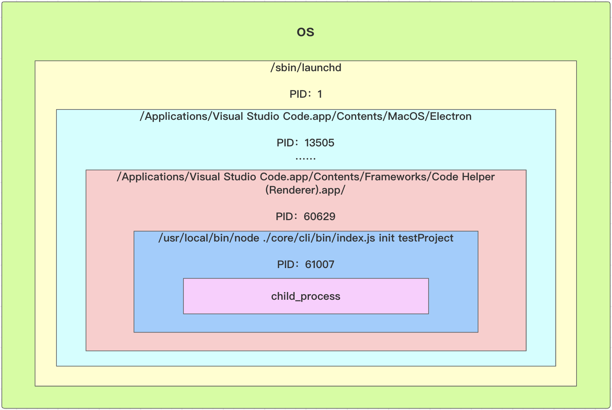

Node 多进程开发入门
Node多进程核心是创建一个子进程，子进程依附在当前Node进程下面
核心类是 child_process
文档路径
http://nodejs.cn/api/child_process.html
子进程概念
是系统进行资源分配和调度的基本单位，是操作系统结构的基础
进程的概念只要有两点
- 进程是一个实体。每一个进程都有它的地址空间
- 进程是一个“执行中的程序”，存在嵌套关系
进程开线程，进程和线程的区别？
查看进程（os）
ps -ef 查看所有进程
Last login: Sun Feb 7 15:42:44 on ttys002
jolly@JollydeMacBook-Pro jolly-cli-dev % ps -ef
UID PID PPID C STIME TTY TIME CMD
0 1 0 0 301220 ?? 14:35.92 /sbin/launchd
0 112 1 0 301220 ?? 0:56.66 /usr/sbin/syslogd
0 113 1 0 301220 ?? 2:26.60 /usr/libexec/UserEventAgent (System)
0 116 1 0 301220 ?? 0:13.29 /System/Library/PrivateFrameworks/Uninstall.framework/Resources/uninstalld
0 117 1 0 301220 ?? 0:54.79 /usr/libexec/kextd
0 118 1 0 301220 ?? 5:35.10 /System/Library/Frameworks/CoreServices.framework/Versions/A/Frameworks/FSEvents.framework/Versions/A/Support/fseventsd
- UID 获得权限的用户的UID
- PID 进程的ID
ps -ef|grep PID可帅选出对应进程
- PPID 父进程的ID，体现进程的嵌套关系
vscode 启动 node 调试时的父子进程关系图。体现了进程嵌套

child_process 用法
const cp = require('child_process');
异步
exec执行shell命令cp.exec('ls -la', function(err, stdout, stderr){ console.log('err: ', err); // 错误 console.log('stdout: ', stdout); // 正常运行输出的结果，后面会有个换行 console.log('stderr: ', stderr); // 异常输出的结果 });jolly@JollydeMacBook-Pro child_process % node index.js err: null stdout: total 8 drwxr-xr-x 3 jolly staff 96 2 7 16:58 . drwxr-xr-x 14 jolly staff 448 2 7 16:58 .. -rw-r--r-- 1 jolly staff 189 2 7 16:59 index.js stderr:- 第二个参数是一个 option 对象
cwd设置执行的目录- timeout 设置执行命令超时的时间，默认是0(不超时)
- 第二个参数是一个 option 对象
execFile执行shell文件- 有四个参数
如果第一个参数不是路径，而是命令，那么通过
which 命令找到对应的文件cp.execFile('ls', ['-la'], function(err, stdout, stderr){ console.log('err: ', err); console.log('stdout: ', stdout); console.log('stderr: ', stderr); });和上面
exec执行效果一样execFile第二个参数是，传入文件的参数和
exec的区别exec支持更复杂的shell命令：ls -la|grep node_modules但
execFile执行[-la|grep node_modules]会报错，不能执行成功。因为grep不是execFile执行文件ls的参数可以执行
.shell文件：将ls -al|grep node_modules写在.shell文件中chmod +x test.shell添加执行权限
test.shell文件当中的内容ls -la|grep node_modules echo $1$1代表execFile传入的第一个参数
exec也能执行指定文件，但是不支持传入参数
spwan执行shell文件如果第一个参数不是路径，而是命令，那么通过
which 命令找到对应的文件const child = cp.spawn(path.resolve(__dirname, 'test.shell'), ['-la'], { cwd: path.resolve('.') }) child.stdout.on('data', function(chunk) { console.log('stdout: ', chunk.toString()); //一次输出一个字符串 }); child.stderr.on('data', function(chunk) { console.log('stderr: ', chunk.toString()); }); child.on('error', e => { // 监听错误 process.exit(1); }); child.on('exit', e => {// 监听执行成功后的退出事件 });option参数
stdio选项用于配置在父进程和子进程之间建立的管道。值：pipe默认值，在子进程和父进程之间创建一个管道。ignore静默执行，不会收到反馈inherit将相应的 stdio 流传给父进程或从父进程传入。将输入、输出、错误，绑定到父进程的process.stdin、process.stdout和process.stderr上。直接能看到打印，还带动画（进度）信息 。
fork使用node执行命令- 一个参数：模块路径
- 和
require()的区别require加载的js模块是在主进程中执行的。fork测试在子进程中的执行的，执行的js文件process.pid会发生变化。
const child = cp.fork(path.resolve(__dirname, 'child.js'));- 适合执行耗时任务。
exec、execFile、fork 底层都是调用 spawn 的
何时使用 spawn、exec、execFile
spawn适合耗时任务（比如：npm install），需要不断日志。spawn逐条执行命令exec/execFile：开销比较小的任务。整个执行完后返回
向子进程发送消息
const child = cp.fork(path.resolve(__dirname, 'child.js'));
// 向子进程发送消息
child.send('hello child process', () => {
// child.disconnect(); // 断开主、子进程直接的连接，否则，命令行将进入等待状态
});
// 接受子进程消息
child.on('mssage', msg => {
console.log('msg: ', msg);
child.disconnect();
});
console.log('main pid', process.pid);
child.js
console.log('child process');
console.log('child pid', process.pid);
// 接受主进程消息
process.on('message', msg => {
console.log('msg: ', msg);
});
// 向主进程发送消息
process.send('hello main process');
执行结果
jolly@JollydeMacBook-Pro child_process % node index.js
main pid 61868
child process
child pid 61869
msg: hello child process
msg: hello main process
注意：子进程向主进程发送消息，容易造成死循环
同步
执行简单 shell 命令
execSync执行shell命令const stdout = cp.execSync('ls -la|grep node_modules'); console.log(stdout.toString()); // stdout 是个 bufferexecFileSync执行shell文件const stdout = cp.execFileSync('ls', ['-la']); console.log(stdout.toString()); // stdout 是个 bufferspawnSync执行shell文件const ret = cp.spawnSync('ls', ['-la']); console.log(ret.stdout.toString()); // ret 是个 buffer
windows 子进程执行 node 命令
cp.spawn('cmd', ['/c', 'node', '-e', code]); // '/c' 表示静默执行